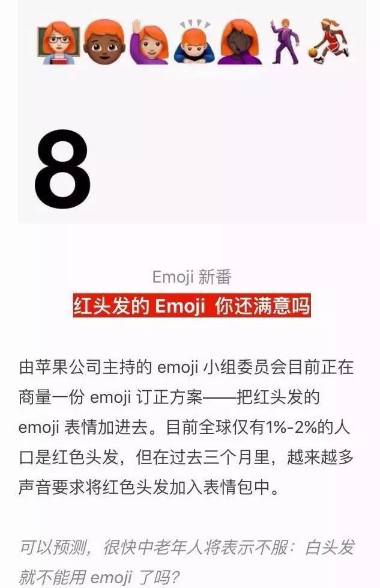
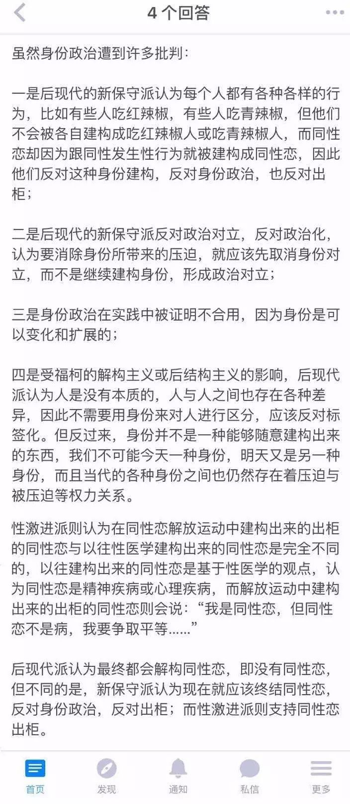

冒刺日常 | 关于《代词与特权》的讨论

前两天《代词与特权》（点击文字即可查看文章）的文章发出后，酷儿论坛的志愿者们对于这样的一个话题进行了一些讨论。下面是经过整理的内容，希望能带给大家一些新的视角和不一样的思考。

陈sir: 个人感觉，这种默认（你是she or he）像是一种更强的stereotype。因为你正确率太高了，几乎不遇不到证明你错误的意见（即使有，也不一定会被表达）。反而，你要花费巨大且收效甚微的成本来对抗这种刻板印象。而我们拥有的这种特权，其实不易察觉，因为你遇到相左的意见，不会觉得自己错了，而会觉得对方是怪胎，尤其当这个stereotype通过各个途径灌输到你的生活的方方面面的时候。而且即使察觉到自己的偏见，但是由于没有改变的必要性，或者说改变的代价太大，不足以带来改变的动力，大家还是回到社会默认的状态。突然想起来一个同样是gay的同学问我为什么出柜，他觉得出和不出没有什么差别。他说他可以很自然地和室友聊女生的话题。我就觉得，别人的这种做法就是默认你是直男的表现，而你没有否认，套用了他们给你的直男的外衣很好地融入了进去。所以这种强烈且容易产生偏见的stereotype甚至在淹没一些声音。所以同样的大家越来越强化了一种定式思维。那个S同学才那么格格不入甚至有些“讨厌”。反思自己的话,虽然尽力让自己的言行克制，不要有因为偏见也佯装幽默的表现，但是还是会不经意得展示自己的愚蠢，比如吐槽“国防生果然唱歌难听”的蠢话。有时候觉得会活得很累，或者竖起了很多条条杠杠而空间局限。不过应该宁可减少潜在的对他人的伤害吧。逻辑不清，请原谅。
Dale: 想到工作坊旭旭说过，特权是不容易被察觉的，人活着好累啊。
文文: 我在找配图的时候看到这么一句话，”If you don't have to think about it , it's a privilege”。

稻子&Dale: 所以要时刻审查自己的特权和红利。
文文: 具体来说要怎么做呀，或者说怎么才能意识到这是一种特权，比如主持人的preferred pronoun的要求就是一种对于特权的提示。
稻子: 处于“更多地被社会直接地注视着”的地位就是一种特权了吧。
陈sir: 感觉需要抱着敬畏之心面对这个世界，聆听不同的声音。然后就是阅读和思考～
· 来自日剧《IQ246》情节一般，不过还是值得一看
肯: 我的理解是特权是一种相对的存在，因此理解特权与其依赖于内向的对自己内心与经历的反复检索，不如更主动地参与到外向的对于他人经历和想法的倾听与共情。
稻子: 不过接触过一些对自己的特权没有什么自觉的人，以为自己的特权人人都有，并以为展示特权是一件非常平常的事，而说出一些伤害到他人的话（或许我对特权的某些理解和他人不同吧…
文文: 我觉得保持开放的心态是很重要的～肯是怎么会想到写这个话题的呀？
肯: 我记得是秋白相关的新闻下有人评论她是变态…是在酷儿论坛的微信群中，评论者貌似也是性少数。

稻子: 啊我想起来，就是我也接触过这样的人，TA们身为性少数，却认为发声和平权行为没有必要，反而觉得“太跳了，给性少数群体抹黑”。
肯: 所以写作对象也不是普罗大众，而是公众号的读者。
阿园: 有一个问题：我们在被人以“错误的”人称代词称号时会感到被冒犯，这里面是否有一定的性别偏见或者性别刻板印象的原因存在呢？如果真的达到了“性别是条毛毛虫”的境界，是不是就不会在意别人以什么称谓称呼ta了呢？
文文: 确实是有各种因素导致人们不同的自我认同，但是不管是何种原因都应该尊重；当然同时也可以宣传“性别是条毛毛虫”的概念。但是考究这种“感到被冒犯”的原因，确实有这样的可能。如果真的能够到达那种境界的话，像跨性别这样的性别都不存在了，所有人都是性别酷儿哈哈哈。（点这里可以查看关于性别酷儿的科普小文章）

· 截图来自公众号“GQ中国”
TONI: 感觉生活中无法做到考虑到所有的特权，从而尊重每一个人的每一个少数的方面。不管是性少数还是残疾还是人种这些比较明显的少数，还有一些不明显的，比如红头发熊猫血之类的，是不是都要考虑呢？这样会不会太花时间？对于一个辩论来说有没有必要花上那么多时间。可不可以在pronoun的环节设置一个“其他”选项。就想世界上有那么多性别，填很多表格的时候不可能全部列出来，都是男女和其他，我觉得这不能算一种歧视。S可以对辩手说，在场各位觉得其他人有什么自己没有的特权嘛？这样不但尊重了性少数群体之外其他少数群体，也节省了大家的时间。
就好像这个emoji，总有人更少数，加上肤色和发色、瞳孔色匹配的话，一个emoji可能有几十种甚至上百种排列方法，全部都列出来，反而会降低用户体验的，emoji公司可以采取的方法就是加一个其他选项，在用户初用键盘的时候进行设计，例如一个混血红发白瞳孔黑人，就可以把除了几个常见的外观之外的几个选项那个“其他”选项的小人在自己的手机里设定成自己的样子，即黑皮肤红头发白瞳孔。
文文: 我觉得这个preferred pronoun不仅包含了性别方面也有你说到的残疾、肤色等各种方面，除了he,she等，我是不是也可以用apple这样的词呢。你感觉这样的做法有点“用力过猛”是吗？emoji这个我觉得确实如果能让大家自己来搭配会更好，现在的输入法其实也是存在着“预设”。所以像S这样的人这么做的出发点是没有问题的，只是ta们也许可以选择一些更好的方法去做这件事。
镜子: 这张图可以供大家思考。
·截图来自知乎
陈sir: 感觉新保守派得到的是没有同性恋只有异性恋的社会，即生存法则按照现有的异性恋的规则进行，而我们想要的结果是没有同性恋也没有异性恋。不过可能不同社会开放程度不同吧～
镜子: 不是哦，只是认为要达到同样的结果方法和过程不同。在这里大家既然都来参与公益肯定是观点和新保守派的不同。

以上就是我们关于《代词与特权》这篇文章的讨论内容了，讨论时由于过于大的脑洞和跳跃的思维，最后大家的话题越跑越远，怎么收都收不回来了……Anyway！如果大家对此也有什么想说的，不妨在留言区说说你的想法吧。